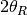
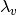

ReflectometrySumInQ dialog.
Table of Contents
Sum counts in lambda along lines of constant Q by projecting to virtual lambda at a reference angle.
| Name | Direction | Type | Default | Description |
|---|---|---|---|---|
| InputWorkspace | Input | MatrixWorkspace | Mandatory | A workspace in X units of wavelength to be summed. |
| InputWorkspaceIndexType | Input | string | The type of indices in the optional index set; For optimal performance WorkspaceIndex should be preferred;. Allowed values: [‘WorkspaceIndex’, ‘SpectrumNumber’] | |
| InputWorkspaceIndexSet | Input | int list | An optional set of spectra that will be processed by the algorithm; If not set, all spectra will be processed; The indices in this list can be workspace indices or possibly spectrum numbers, depending on the selection made for the index type; Indices are entered as a comma-separated list of values, and/or ranges; For example, ‘4,6,10-20,1000’; | |
| OutputWorkspace | Output | MatrixWorkspace | Mandatory | A single histogram workspace containing the result of summation in Q. |
| BeamCentre | Input | number | Mandatory | Fractional workspace index of the specular reflection centre. |
| FlatSample | Input | boolean | True | If true, the summation is handled as the standard divergent beam case, otherwise as the non-flat sample case. |
| IncludePartialBins | Input | boolean | False | If true, use the full projected wavelength range possibly including partially filled bins. |
This algorithm sums the Y values of histograms given by
InputWorkspaceIndexSet into a single single histogram. The summation is done
using the method proposed by Cubitt et al. [1] This involves a
projection to an arbitrary reference angle, , with a
“virtual” wavelength, . This is the wavelength the neutron
would have had if it had arrived at with the same momentum
transfer ( ).
).
Counts are considered to be spread evenly over the input pixel, and the top-left and bottom-right corner of the pixel are projected onto giving a range in to project onto. Counts are shared out proportionally into the output bins that overlap this range, and the projected counts from all pixels are summed into the appropriate output bins.
The input workspace should have wavelength as the X units as well as an instrument.
To produce a reflectivity, the input workspace has to be the reflected beam workspace where each histogram is individually divided by the summed (in lambda) direct beam data.
Example - basic usage with reflectometry-like data
import numpy as np
from mantid.simpleapi import *
import matplotlib.pyplot as plt
# Direct beam
noBackground = 'name=LinearBackground, A0=0'
direct = CreateSampleWorkspace(
Function='User Defined',
UserDefinedFunction=noBackground,
NumBanks=1,
XUnit='Wavelength',
XMin=0., XMax=20., BinWidth=1.)
# Move the detector such that the beam is right at its center.
MoveInstrumentComponent(
Workspace=direct,
ComponentName='bank1',
X=-0.008 * 4.5, Y= -0.008 * 4.5, Z=0.)
# Fill intensity for pixels in the beam
for i in [44, 45, 54, 55]:
direct.dataY(i).fill(1.)
direct.dataE(i).fill(0.1)
# Group detectors to form a 'line detector'. The line is vertical in this case.
groupingPattern=''
for row in range(10):
for column in range(10):
groupingPattern = groupingPattern + str(column * 10 + row)
if column < 9:
groupingPattern = groupingPattern + '+'
if row < 9:
groupingPattern = groupingPattern + ','
direct = GroupDetectors(
InputWorkspace=direct,
GroupingPattern=groupingPattern,
Behaviour='Sum')
#Reflected beam
reflected = CreateSampleWorkspace(
Function='User Defined',
UserDefinedFunction=noBackground,
NumBanks=1,
XUnit='Wavelength',
XMin=0., XMax=20., BinWidth=1.)
# Move the detector. This reflectometer moves vertically.
MoveInstrumentComponent(
Workspace=reflected,
ComponentName='bank1',
X=-0.008 * 4.5, Y= 0.008 * 4, Z=0.)
# Create some fake reflected beam data.
Xs = reflected.readX(0)
Xs = (Xs[1:] + Xs[:-1]) / 2 # Bin edges -> points
decay = np.exp(-(Xs - 4.) / 3.)
span = decay < 1.
for i in [44, 45, 54, 55]:
Ys = reflected.dataY(i)
Ys.fill(1.)
Ys[span] = decay[span]
reflected = GroupDetectors(
InputWorkspace=reflected,
GroupingPattern=groupingPattern,
Behaviour='Sum')
# Now we have somewhat realistic data.
# Sum the direct beam (in lambda).
direct=SumSpectra(direct, ListOfWorkspaceIndices=[4, 5])
# Calculate (sum in Q) the reflectivity.
reflected /= direct
reflectivity = ReflectometrySumInQ(
InputWorkspace=reflected,
InputWorkspaceIndexSet=[4, 5],
BeamCentre=4)
reflectivity = CropWorkspace(
reflectivity,
XMin=0.1, XMax=19.)
fig, axes = plt.subplots(subplot_kw={'projection': 'mantid'})
axes.plot(reflectivity)
axes.set_ylabel('"Reflectivity"')
# Uncomment to show the plot window.
#fig.show()
mtd.clear()
(Source code, png, hires.png, pdf)
| [1] | Cubitt et al., J. Appl. Crystallogr., 6 2006 (2015) doi: 10.1107/S1600576715019500 |
Categories: Algorithm Index | Reflectometry | ILL\Reflectometry
C++ source: ReflectometrySumInQ.cpp (last modified: 2019-02-15)
C++ header: ReflectometrySumInQ.h (last modified: 2019-02-15)
{kind=link}
{kind=link}